<ion-content>
  <div id="container">
    <div id="data">
      <div *ngIf="!datosCliente"></div>
      <div id="back" [routerLink]="['/home']" *ngIf="datosCliente">
        
      </div>
      <div id="logo">
        
      </div>
      <div></div>
    </div>
    <div id="datos">
      <div class="group">      
        <input type="text" required #nombre [value]="nombreS">
        <span class="highlight"></span>
        <span class="bar"></span>
        <label>Nombre</label>
      </div>

      <div class="select">
        <select class="select-text" required #grado [(ngModel)]="gradoS">
          <option value="0"></option>
          <option *ngFor="let grado of titles" [value]="grado.IdTitle">{{ grado.Title }}</option>
        </select>
        <span class="select-highlight"></span>
        <span class="select-bar"></span>
        <label class="select-label">Grado</label>
      </div>

      <div class="group">      
        <input type="date" required #nacimiento [value]="nacimientoS">
        <span class="highlight"></span>
        <span class="bar"></span>
        <label>Fecha nacimiento</label>
      </div>

      <div class="group">      
        <input type="date" required [value]="altaS" #alta>
        <span class="highlight"></span>
        <span class="bar"></span>
        <label>Fecha alta</label>
      </div>

      <div class="select">
        <select class="select-text" required #situacion [(ngModel)]="situacionS">
          <option value=""></option>
          <option value="Activo">Activo</option>
          <option value="Retirado">Retirado</option>
        </select>
        <span class="select-highlight"></span>
        <span class="select-bar"></span>
        <label class="select-label">Situación militar</label>
      </div>

      <div class="select">
        <select class="select-text" required #genero [(ngModel)]="generoS">
          <option value=""></option>
          <option value="M">Masculino</option>
          <option value="F">Femenino</option>
        </select>
        <span class="select-highlight"></span>
        <span class="select-bar"></span>
        <label class="select-label">Género</label>
      </div>

      <ion-button color="banjercito" expand="full" (click)="guardarDatos(nombre.value, grado.value, nacimiento.value, alta.value, situacion.value, genero.value)">
        <ion-ripple-effect></ion-ripple-effect>Guardar
      </ion-button>
      
    </div>
  </div>
</ion-content>
